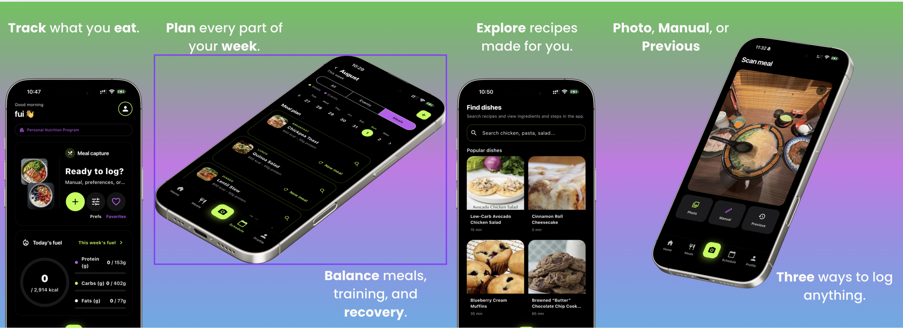

Simple & Accessible Nutrition
Clear nutrition information for everyday decisions.
Welcome to VITASTE
Created by Angela Li — creator of VITASTE
VITASTE helps people understand food and make healthier choices.
For athletes, students, and anyone building healthier habits.
We’re excited to have you here.
VITASTE started for athletes, then expanded for everyone.
It supports daily nutrition decisions, including diabetes-friendly goals.
Clear nutrition information for everyday decisions.
Personal guidance that fits each user’s routine and goals.
Hi, I’m Angela Li, the founder and creator of VITASTE. I built VITASTE because I believe health guidance should feel personal, practical, and encouraging — not confusing or overwhelming.
VITASTE began as an idea to support athletes with better nutrition awareness. As I continued developing the app, I realized the same support is valuable for many people: students, families, people building healthier routines, and people managing conditions like diabetes.
My goal is to create tools that help users make informed decisions in everyday life. I care deeply about turning complex nutrition information into simple, actionable guidance people can actually use.
I’m passionate about combining technology and wellness in a way that is inclusive and human-centered. Through VITASTE, I hope to help more people feel confident, supported, and empowered in their health journey.
Thank you for being part of the VITASTE journey. If you have questions, please contact me using the email at the bottom of this page.
VITASTE combines food scanning and simple guidance to build healthy habits.
READY to start capture flow.SHOOT to request a fresh image on demand.Simple flow from photo capture to health guidance:
ESP32-S3 takes a food photo.
Image transfers to the app over BLE.
App generates nutrition insights (optional AI).
User gets practical next-step guidance.
Real app screens from NutriLens on iPhone Simulator.



IMGH + total + chunk_count + payload_size
chunk = uint16 index + JPEG bytes
IMGE + total confirms transfer footer
0x01 ACK window / retransmit control
0x02 SHOOT request
0x03 READY handshake
0x04/0x05/0x06 description stream
0x07 short error message (OLED variant)
Sleep mode is optional and helps reduce activity when needed.
VITASTE turns nutrition data into practical daily support.